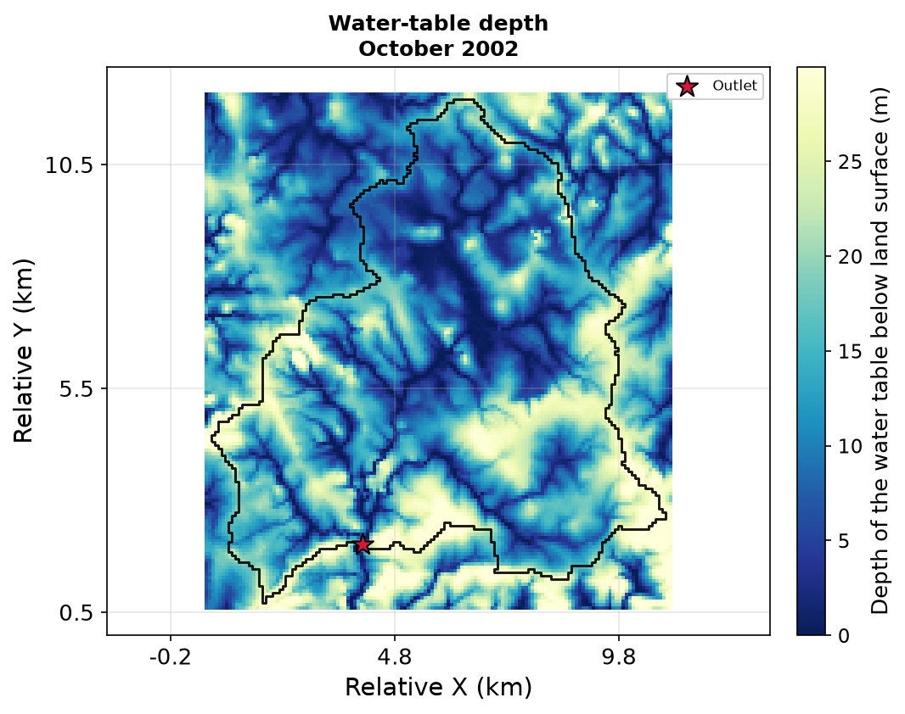
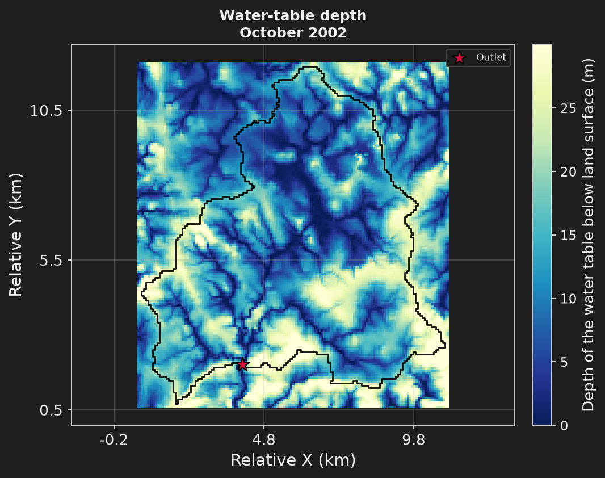

Step 5: every export#
- Task
Write the results of step 4 in every format HydroModPy can export, and ask for more files once the run exists.
- Time
1 to 2 min for the run, 1.5 to 3 min for the command.
- Needs
The example files (The staircase). Nothing is downloaded.
- Gives
Eight figures and fourteen files, from GeoPackage to a portable archive of the run.
Step 5 does not change the model. It is step 4 with its results written out in every format
HydroModPy can export. The file drops the inherited exports with export__delete = true
and states its own list, one [[export]] block per request. A block says what
(variables), when (time or period), and where and how (format, file, crs).




The map is the field of one of the exports below, watertable_depth_2002-10-15.tif, drawn.
The file#
step5_export.toml inherits step4_transient.toml · + new · ~ changed · keys link to their card1# Step 5: step 4 with its results written out, one [[export]] block per kind. 2# The model does not change. Files land in share/nancon_step5_export/. 3# 4# hmp run step5_export.toml 5# hmp export nancon_step5_export --list what the run can export 6 7+base_config = "step4_transient.toml" 8 9# Steps 1 to 4 already export a few files. This step writes its own list 10# instead: the inherited blocks are dropped first. 11+export__delete = true 12 13[simulation] 14~name = "nancon_step5_export" 15 16# The catchment and the mapped network: GeoPackage. Step 3 writes the same 17# for BD Topage, with the permanent reaches apart. 18[[export]] 19variables = ["watershed", "hydrographic_network_reference"] 20 21# The same catchment as a Shapefile. 22[[export]] 23variables = "watershed" 24format = "shapefile" 25 26# The DEM the catchment was cut from: GeoTIFF. 27[[export]] 28variables = "watershed_dem" 29 30# The water table in October 2002: one GeoTIFF per variable. 31[[export]] 32variables = ["head", "watertable_depth", "seepage_mask"] 33time = "2002-10-15" 34 35# The simulated active network that month, as mesh cells in a GeoPackage. 36[[export]] 37variables = "simulated_active_network" 38time = "2002-10-15" 39format = "geopackage" 40 41# The whole record of the water table: one NetCDF chronicle. 42[[export]] 43variables = ["head", "watertable_depth"] 44file = "watertable_2000_2002.nc" 45 46# Simulated and gauged discharge over the two scored years: CSV. 47[[export]] 48variables = ["discharge", "discharge_obs"] 49period = ["2001-01-01", "2002-12-31"] 50 51# The monthly water budget: CSV. 52[[export]] 53variables = "budget" 54 55# A web-map layer, reprojected; the extension gives the format. 56[[export]] 57variables = "watertable_depth" 58time = "2002-10-15" 59file = "watertable_depth_wgs84.tif" 60crs = "EPSG:4326" 61 62# ParaView. 63[[export]] 64variables = "head" 65time = "2002-10-15" 66format = "vtu" 67 68# The portable archive of the run. 69[[export]] 70variables = "all" 71format = "package" 72 73# One figure beside most exports: the same data, drawn instead of written. 74[display] 75~figures = [ 76 "watershed_id_card", 77 "flux_timeseries", 78 "hydrograph_sim_obs", 79 "watertable_depth_map", 80 "seepage_map", 81 "seepage_network_confusion_map", 82 "downslope_distance_map", 83 "flow_persistence_map", 84]
The resolved file of step 5 against the resolved file of step 4. The model is the same: the changes are the figures and the export blocks.
--- step4_transient
+++ step5_export
@@ -7,3 +7,3 @@
[simulation]
-name = "nancon_step4_transient"
+name = "nancon_step5_export"
@@ -70,7 +70,10 @@
figures = [
+ "watershed_id_card",
"flux_timeseries",
"hydrograph_sim_obs",
+ "watertable_depth_map",
"seepage_map",
+ "seepage_network_confusion_map",
+ "downslope_distance_map",
"flow_persistence_map",
- "flow_intermittence_map",
]
@@ -83,30 +86,2 @@
cycle = "2002"
-
-[[export]]
-variables = "watershed"
-
-[[export]]
-variables = [
- "watertable_depth",
- "seepage_mask",
-]
-time = "last"
-
-[[export]]
-variables = "budget"
-
-[[export]]
-variables = "hydrographic_network_reference"
-
-[[export]]
-variables = [
- "head",
- "watertable_depth",
-]
-
-[[export]]
-variables = [
- "discharge",
- "discharge_obs",
-]
@@ -145 +120,62 @@
]
+
+[[export]]
+variables = [
+ "watershed",
+ "hydrographic_network_reference",
+]
+
+[[export]]
+variables = "watershed"
+format = "shapefile"
+
+[[export]]
+variables = "watershed_dem"
+
+[[export]]
+variables = [
+ "head",
+ "watertable_depth",
+ "seepage_mask",
+]
+time = "2002-10-15"
+
+[[export]]
+variables = "simulated_active_network"
+time = "2002-10-15"
+format = "geopackage"
+
+[[export]]
+variables = [
+ "head",
+ "watertable_depth",
+]
+file = "watertable_2000_2002.nc"
+
+[[export]]
+variables = [
+ "discharge",
+ "discharge_obs",
+]
+period = [
+ "2001-01-01",
+ "2002-12-31",
+]
+
+[[export]]
+variables = "budget"
+
+[[export]]
+variables = "watertable_depth"
+time = "2002-10-15"
+file = "watertable_depth_wgs84.tif"
+crs = "EPSG:4326"
+
+[[export]]
+variables = "head"
+time = "2002-10-15"
+format = "vtu"
+
+[[export]]
+variables = "all"
+format = "package"
Run it#
hmp run step5_export.toml
hmp export nancon_step5_export --list
--list prints what the run can export, by kind, and writes nothing.
import hydromodpy as hmp
run = hmp.run("step5_export.toml")
Once the run exists, hmp.export(run, ["head", "watertable_depth"], time="2002-10-15")
writes more files and returns their paths.
What you get#
Eleven export blocks write fourteen files, in share/nancon_step5_export/. The format
follows the data unless the block says otherwise: a vector layer is a GeoPackage, a series
or a table is a CSV, and a field at one instant is a GeoTIFF.
What |
When |
Format |
|---|---|---|
the catchment and the mapped network |
GeoPackage |
|
the catchment |
Shapefile |
|
the DEM the catchment was cut from |
GeoTIFF |
|
|
15 October 2002 |
one GeoTIFF per variable |
the simulated active network, as mesh cells |
15 October 2002 |
GeoPackage |
|
the whole record |
NetCDF, |
|
2001 and 2002 |
CSV |
the water budget, monthly |
CSV |
|
|
15 October 2002 |
GeoTIFF reprojected to |
|
15 October 2002 |
VTU, for ParaView |
everything |
a portable archive of the run ( |
The Shapefile is one block and several files (.shp, .dbf, .prj, .shx, .cpg), which
the run counts as one export.
Eight figures, drawn from the same data: watershed_id_card, flux_timeseries,
hydrograph_sim_obs, watertable_depth_map, seepage_map, seepage_network_confusion_map,
downslope_distance_map and flow_persistence_map.
Once a run exists you can also ask for files without editing the TOML, for example
hmp export nancon_step5_export head watertable_depth --time 2002-10-15.
Key fields#
The other keys of a block are export.period, export.crs and
export.folder.
Next: Step 6: the soil reservoir, a daily run with a soil reservoir.